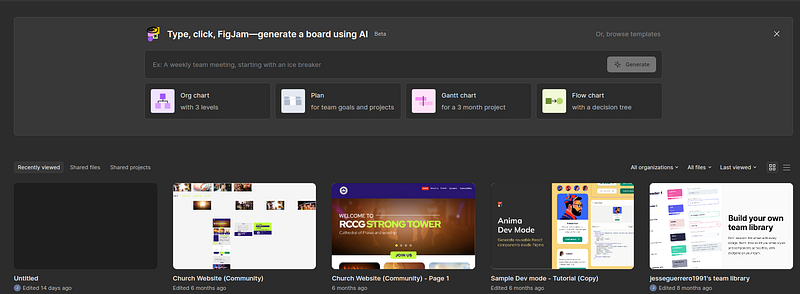
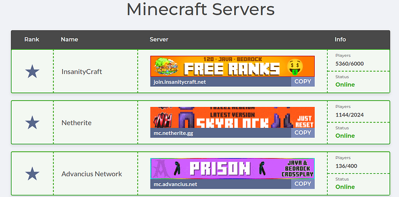
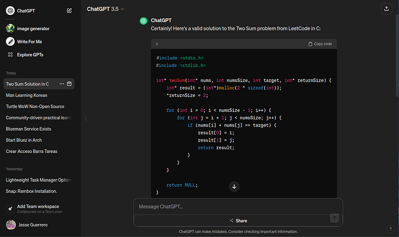

Lets say you already picked a language.
You wish to learn and you wish to learn fast.
How is this done?
Why should I do it?
What does it take to learn a language?
If you do not have a language in mind I wrote an article on picking your first language.
But, how do we start?
Well, there are two things you must consider.
First, if you have never learned a language before you might think its as easy as 20 hours or so.
This is not the case.
It takes minimum 300+ hours for basic proficiency and if you want to master something it takes minimum 1000's of hours.
A better perspective is to push any notion that you can learn coding quickly out of your mind.
Second, any type of coding will help you grow as a programmer.
Stick to a niche you love
For the sake of coding anything a niche you absolutely love should sustain you these 1000+ hours.
Honestly, you should be smiling while coding some niche and watching yourself grow.
General categories of niches are game development, website design, machine learning and so much more.
But within these general categories exist specific niches which should be sought out.
Here are some good examples of niches:
- World of Warcraft Private server development
- Runescape private server development
- Open-source language models
- Classic game remakes (Diablo 1/2, Super Mario)
- Console emulator development
- Crypto bot development
- Computer vision learning
- Minecraft client/server development
- Figma design
- Etc.
Each of the niches I mentioned have actual teams and dedicated Discord groups.
For many people a game like Minecraft was a childhood past time.
They can easily make plugins or code their own mods in Java with little perceived effort.
As they code time slips away and they hadn't realized its been 6 hours.
That type of love for a niche is what you are looking for.
The love for programming itself often comes later.
Go through a full course on the language
From the start we do not know what we need to know.
It is impossible for us to see it without looking back as an expert.
You will encounter naysayers of learning through online course series.
They say...
- "Guided learning teaches nothing"
- "I can never learn through a video"
- "I can only learn by coding itself"
- Etc.
Get these thoughts out of your mind.
Guided learning is absolutely essential.
Structure eases the entire process.
Typically these programmers have forgotten they had teachers.
More often than not great programmers had great teachers.
And yes, there are some people with a 150 IQ that simply learn too fast for a teacher.
But it is more common for us the good teacher produces great learning.
To find these courses, the best place to go would be Udemy.
It is worth the price.
Otherwise, free YouTube courses would be the alternative.
What you want to look for is "zero to hero", "masterclass" or "complete" courses on a language.
Learn for the niche
When you pick your course, you should do so with your niche in mind first and foremost.
The question to ask, "If I am going to code this niche, what do I need to learn?"
The answer, language first, niche second.
But learn the language for the niche.
There should be a spark of excitement which drives you to complete a Udemy course on Kotlin, for example.
The course and some project or niche you are engaged in should match up.
Use LLMs as a personal tutor
As you are coding and doing full courses you should use other resources, particularly LLMs.
LLMs are a new standard of learning.
It is not cheating or a "shortcut".
It is an essential part of being a programmer.
Ask the LLM (Large Language Model) a question from your Udemy course or niche.
Tell it to explain code and computer science concepts.
You will find it is extremely helpful.
Treat LLMs like they are a mentor of programming.
They can give an entire conversation in regards to one specific thing you can get nowhere else.
Google is not even relevant anymore.
Consume a variety of teaching styles
A major point to learning a language is consuming the same content from different sources.
Let us say you are struggling with threads in programming (its okay to not know what that is)
You learn one thing from the Udemy course.
You don't quite get it.
So you ask an LLM to explain it to you.
You get it better.
You might even understand it.
Push your memory further and look up a YouTube video on the same topic.
The more different ways you hear the same topic explained the easier it is to grasp and recall later.
Often it is a good idea to mix learning sources...
- Learn from the video course
- Look up another teacher (YouTube)
- Ask an LLM
- Read a blog on it
- Code it in your niche
- Read code from some source
Mixing these will grant a deeper understanding and enforce a firm memory.
The ideal scenario
The ideal scenario is to find a solid community.
Often, this ideal scenario is impossible to find which is why I recommend it last.
But, if you recognize it from what I am about to tell you then take it.
The best communities are those where its one big project.
Usually with 1 or 2 leaders.
This leader takes care of his/her contributors, reviews code and gives feedback on how to improve their project.
I have never seen better communities than those which wrap around a project.
These projects often have an open-source website, API and a few code sources.
For your own perception, examples for these ideal communities would be...
- Spartan Engine (C++)
- 2011Scape (Kotlin)
- Azeroth World of Warcraft (C++)
- Any Minecraft server
- Etc.
In addition the even more ideal scenario is where the leader and community culture match your political or religious views.
I know that sounds wonky but every project community out there has a culture for its entire community, usually set by the leader.
If the culture fits, the niche is fire and the leader is leading then you have a good thing in front of you.
The communities you do not want are those which wrap around a topic or teach a framework.
Those are often lackluster, boring and decentralized with no real leadership.
Anywho, I hope you learned something...
CTA: Check out my other articles and, if you feel like it, sponsor me on GitHub: https://github.com/sponsors/JesseGuerrero
Happy coding!
Resources
How to pick your first programming language: How Should I Pick a Language to Start Coding Like a Superstar?
Why monolithic courses: Do Full Courses Really Help You Become a Great Coder?